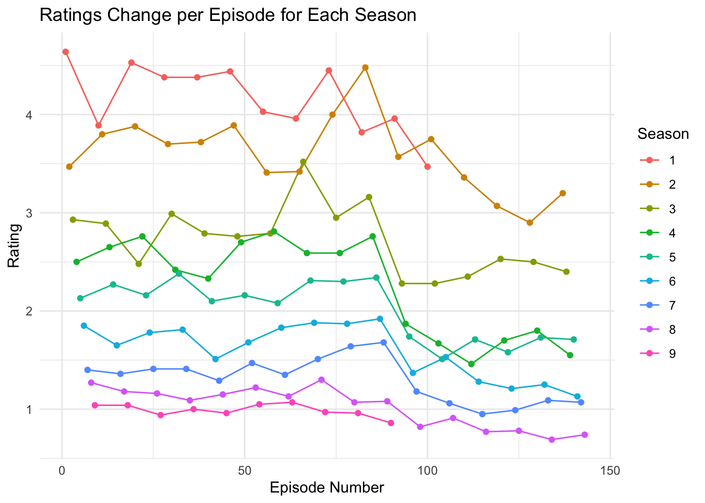

knitr::convert_chunk_header(input = “Rmarkdown Assignment.Rmd”, output = “QMD Assignment.qmd”) # Short Description
Suits is an American television drama series created by Aaron Korsh, which premiered on June 23, 2011, on the USA Network. It revolves around Mike Ross (Patrick J. Adams), who begins working as a law associate for Harvey Specter (Gabriel Macht), despite never attending law school. The show focuses on Harvey and Mike managing to close cases, while maintaining Mike’s secret.
1 Ratings
1.1 Suits: U.S. viewers per episode (millions)
| Season/Episode number | 1 | 2 | 3 | 4 | 5 | 6 | 7 | 8 | 9 | 10 | 11 | 12 | 13 | 14 | 15 | 16 |
|---|---|---|---|---|---|---|---|---|---|---|---|---|---|---|---|---|
| 1 | 4.64 | 3.89 | 4.53 | 4.38 | 4.38 | 4.44 | 4.03 | 3.96 | 4.45 | 3.82 | 3.96 | 3.47 | ||||
| 2 | 3.47 | 3.8 | 3.88 | 3.7 | 3.72 | 3.89 | 3.41 | 3.42 | 4 | 4.48 | 3.57 | 3.75 | 3.36 | 3.07 | 2.9 | 3.2 |
| 3 | 2.93 | 2.89 | 2.48 | 2.99 | 2.79 | 2.76 | 2.79 | 3.52 | 2.95 | 3.16 | 2.28 | 2.28 | 2.35 | 2.53 | 2.5 | 2.4 |
| 4 | 2.5 | 2.65 | 2.76 | 2.42 | 2.33 | 2.7 | 2.81 | 2.59 | 2.59 | 2.76 | 1.87 | 1.67 | 1.46 | 1.7 | 1.8 | 1.55 |
| 5 | 2.13 | 2.27 | 2.16 | 2.38 | 2.1 | 2.16 | 2.08 | 2.31 | 2.3 | 2.34 | 1.74 | 1.51 | 1.71 | 1.58 | 1.73 | 1.71 |
| 6 | 1.85 | 1.65 | 1.78 | 1.81 | 1.51 | 1.68 | 1.83 | 1.88 | 1.87 | 1.92 | 1.37 | 1.53 | 1.28 | 1.21 | 1.25 | 1.13 |
| 7 | 1.4 | 1.36 | 1.41 | 1.41 | 1.29 | 1.47 | 1.35 | 1.51 | 1.64 | 1.68 | 1.18 | 1.06 | 0.95 | 0.99 | 1.09 | 1.07 |
| 8 | 1.27 | 1.18 | 1.16 | 1.09 | 1.15 | 1.22 | 1.13 | 1.3 | 1.07 | 1.08 | 0.82 | 0.91 | 0.77 | 0.78 | 0.69 | 0.74 |
| 9 | 1.04 | 1.04 | 0.94 | 1 | 0.96 | 1.05 | 1.07 | 0.97 | 0.96 | 0.86 |
1.2 A Suits statistics each season.
1.2.0.1 Calculate statistics for each season
# A tibble: 9 × 6
Season Average_Rating Median_Rating Max_Rating Min_Rating SD_Rating
<chr> <dbl> <dbl> <dbl> <dbl> <dbl>
1 1 4.16 4.20 4.64 3.47 0.355
2 2 3.60 3.64 4.48 2.9 0.388
3 3 2.72 2.78 3.52 2.28 0.348
4 4 2.26 2.46 2.81 1.46 0.492
5 5 2.01 2.12 2.38 1.51 0.297
6 6 1.60 1.66 1.92 1.13 0.273
7 7 1.30 1.36 1.68 0.95 0.225
8 8 1.02 1.08 1.3 0.69 0.204
9 9 0.989 0.985 1.07 0.86 0.06381.2.0.2 Generate a chart of ratings changes for each season

1.3 Suits ratings statistics summary
It can be seen from the average ratings that the first and second seasons have high ratings, but starting from the third season, the ratings have been declining.
It can be seen from the chart that the ratings of each season will drop strongly starting from the tenth episode.